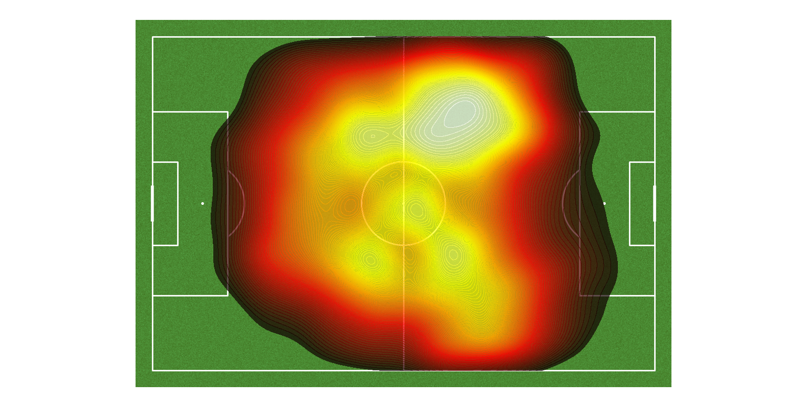
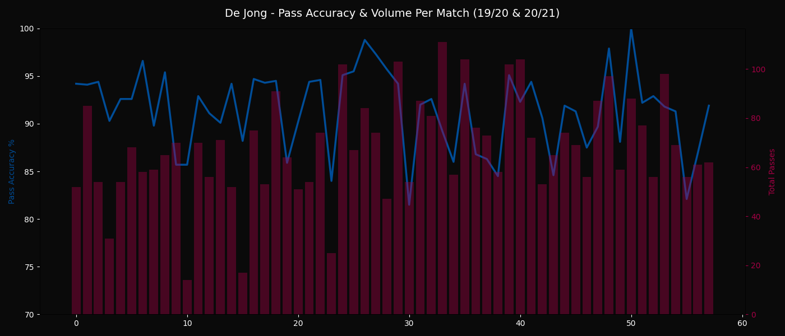
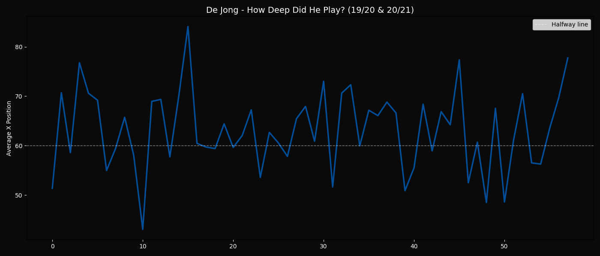
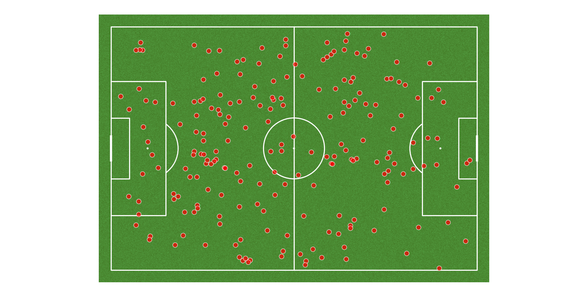

FC Barcelona · La Liga · 2019/20 & 2020/21 · A Data Story
How Frenkie de Jong carried Barcelona through their most chaotic era — and why the numbers tell a story the highlights never showed.
Introduction
I started watching football because of a neighbour who used to watch Barcelona matches and play football constantly. Through him, I grew up watching Lionel Messi during his prime years. Even though I was too young to fully understand the tactics, I loved Barcelona's style of football and the highlights I watched on repeat.
As I got older, I realised my favourite players were not always the ones scoring goals — but the ones who controlled the game with intelligence, composure, and game IQ.
During Barcelona's downfall years, when the club was going through tactical and financial chaos and Messi was eventually leaving, I almost stopped watching football regularly. But Frenkie de Jong stood out immediately. The way he carried the ball through pressure, controlled tempo, and made the game look calm and effortless — it made me fall in love with watching football again.
Context
This project focuses on La Liga matches from the 2019/20 and 2020/21 seasons — two full campaigns that capture the peak of Barcelona's institutional collapse.
The club still looked big externally. Messi was still there. Huge names, expensive transfers, massive wages. But internally it was broken — financial disaster, aging squad, tactical confusion, dressing room instability, and a 8–2 humiliation against Bayern Munich that changed the psychological mood of the club forever.
In the middle of all that chaos, Frenkie de Jong became one of the few players who still brought calmness and control. Across 68 league matches, he was only substituted 12 times and had only 4 injury events. Koeman clearly trusted him heavily, and the data shows how essential he was to the structure of the team during those difficult seasons.
Visualisation 01
When I look at De Jong's heatmap across two full seasons, the first thing I notice is how deep he drops to receive the ball. He is constantly involved in buildup and progression instead of waiting higher up for goals or assists. Most of his work comes from helping the team move from defence into attack through carries and intelligent positioning.

Touch heatmap — all La Liga matches, 2019/20 & 2020/21. Yellow = highest activity zones.
Another detail visible in the heatmap is how he drifts toward the right side quite often even though he is usually associated with the left side of midfield. Under Koeman, De Jong had a very free and dynamic role — constantly moving depending on where space was available. You can see how much ground he covers and how active he is across multiple areas of the pitch.
Visualisation 02
The pass chart tells the story of how consistent De Jong was, even when Barcelona were not. Midfield is one of the hardest areas on the pitch to maintain possession — players are constantly surrounded and pressed — yet he consistently kept the ball moving calmly under pressure.

Pass accuracy (%) and total pass volume per match across both seasons. Blue line = accuracy, red bars = volume.
What stands out even more is that his role was not based on safe sideways passing alone. A huge part of his game involved progressing the ball forward through carries and difficult passes in buildup situations. Despite recording 3,430 carries across these league matches, he was dispossessed only 54 times — showing how exceptional he is at escaping pressure and protecting possession.
Even during Barcelona's tactical instability, he consistently remained one of the team's most reliable players on the ball. The dips in the chart are real — but they always bounce back. That's not a player struggling. That's a player carrying a struggling team.
Visualisation 03
The depth chart shows how flexible and dynamic his role really was. In some matches he drops extremely deep, almost next to the defenders during buildup. In others he pushes much higher to support attacks. His average positioning changes constantly depending on what the team needs.

Average x-position per match over time. The dashed line marks the halfway line (x=60). Above = opponent's half.
There are noticeable fluctuations throughout the timeline that in many ways reflect Barcelona's instability during those years. Tactical changes, managerial shifts, and the overall chaos around the club clearly affected the team structure.
Visualisation 04
One thing that surprised me while analyzing the data was how much defensive work De Jong was actually doing across these seasons. Most people mainly associate him with possession, buildup, and ball carrying, but the recovery map shows another important side of his game.

Ball recoveries across all 68 La Liga matches from the 2019/20 and 2020/21 seasons. Every dot represents a moment Frenkie de Jong won possession back for Barcelona.
The recoveries are spread almost everywhere across the pitch — deep in his own half, wide areas, central midfield, and even higher up the field. It shows that he was constantly involved defensively and was not the type of midfielder who disappeared without the ball.
The cluster on the left side of his own half especially stands out because it matches the rest of his profile perfectly. A lot of the time, De Jong would drop deep to help recover possession and then immediately help progress the ball forward through carries or passing combinations.
Conclusion
Frenkie de Jong is underrated because people judge midfielders through goals and assists. His impact is much more subtle — controlling tempo, progressing possession, escaping pressure, bringing calmness to the overall structure. He is the type of midfielder whose influence becomes obvious when you watch the full game instead of only looking at the highlights.
He stayed through the humiliation era. Through the Messi exit. Through the financial crisis. Through the transfer rumours and the fan anger and the tactical chaos. And through all of it, he just kept playing football.
Frenkie the Phoenix feels fitting. A player who continued to rise through the ashes during one of the club's most difficult eras. Not with goals. Not with assists. But with composure, intelligence, and an almost stubborn refusal to be ordinary.